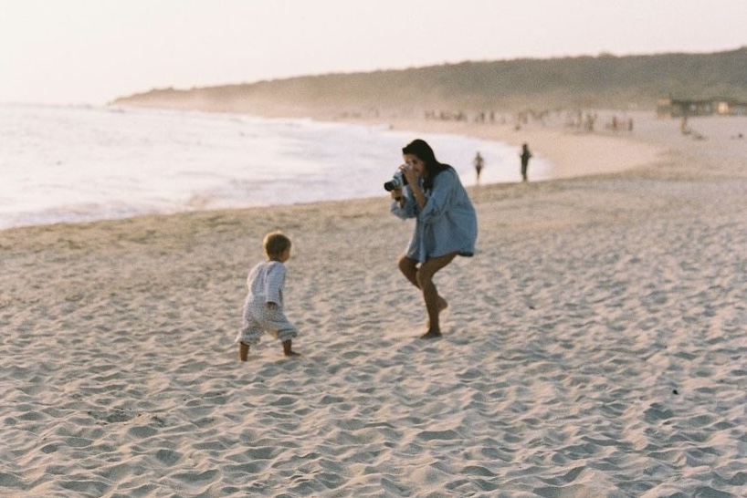

ABOUT ANNA
Anna was born in Aachen, Germany. She began capturing the world through her photos from a young age on. Anna is currently studying photodesign at the University of Applied Sciences Munich and works as photo editor for SZ Magazine. She is specialised in fashion and beauty photography.
